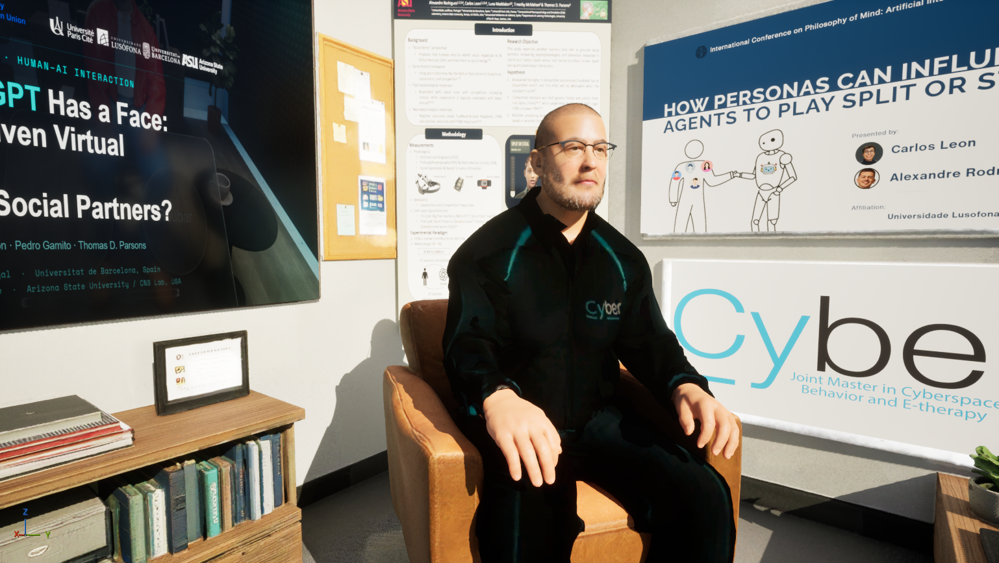
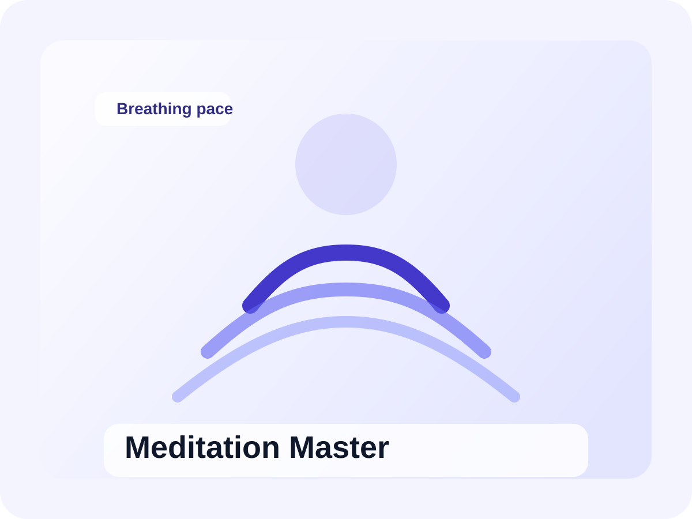

Social Foundations
Anthropomorphism, agency, social presence, and Theory of Mind in human-agent encounters.
Cypsy29 · June 30, 2026
An interdisciplinary workshop bridging cognitive science, conversational AI, and immersive technology to study how people perceive and interact with embodied virtual agents.
Anthropomorphism, agency, social presence, and Theory of Mind in human-agent encounters.
Behavioral, physiological, and self-report data integrated as experimental measurement frameworks.
Game engines, LLM-driven dialogue, speech pipelines, avatars, and biosignal synchronization.
A compact progression from theory to live demonstration, closing with open discussion on applications and ethics.
Part 1
Theoretical foundations, measurement frameworks, and experimental paradigms.
Part 2
Integrated virtual human setup with conversational agents and synchronized multimodal recording.
Technology
Game engines, LLM dialogue, speech pipelines, avatars, and biosignal acquisition architecture.
Closing
Methodological challenges, ethics, and applications in health, training, and education.
Virtual humans as social actors in human-machine interaction.
Anthropomorphism, agency perception, and social presence mechanisms.
Multimodal measurement: behavioral, physiological, and self-report proxies.
Technical infrastructure: conversational AI, environments, and biosignal systems.
Methodological challenges in designing studies with virtual humans.
Research and applied ideas for health, education, training, and human-AI collaboration.
Three applied concepts demonstrating the workshop themes. Select a card to expand its design focus.
An embodied tutor that adapts explanations to guide users through complex concepts interactively.

A multilingual virtual host answering questions about Cypsy29 using conference-aware knowledge.

Guides relaxation through paced techniques, adapting to the user via physiological signals.
View the full workshop listing in the official Cypsy29 program for scheduling details.